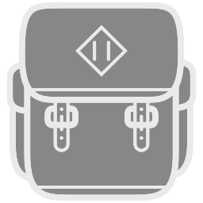

Other Stuff¶
A few other actions are available that don’t come into play during the regular singleplayer campaign, but which might be useful if playing multiplayer or mods. These actions are available in a virtual menu:

to bring up the menu, and select and click on the menu icon for the action you want.
Once you’ve selected an action, in three of these four cases you then will need to pick a number. Release the trigger so you’re no longer mode-shifted, and continue to use the trackpad; the menu will change to a number wheel.
to select and click on a number.
Multiplayer Interactions¶
If you’re in a multiplayer game, these two actions are relevant.
(co-op or competitive) If you’re a member of a team, you can click on this icon to “detach” currently selected units to give them to some other player on your team. You’ll see a numbered list of players on-screen. Release the trigger, and use the left trackpad to select and click on the number of the player to receive the units.
(competitive) If the game settings allow alliances, and you are a solo player or team captain, you can make or break an alliance with another team. Click on this icon to perform the alliance command. You’ll see a numbered list of teams on-screen. Release the trigger, and use the left trackpad to select and click on the number of the team to make or break the alliance with.
Inventory¶
The original Myth 2 campaign doesn’t have a complicated inventory concept (some units might be able to hold one thing). However some mods include special units that can carry multiple items, with one of them currently designated as held/active/usable. If you have one such unit selected, these two actions are relevant.
Click on this icon to choose which item is currently held by the unit. You’ll see a numbered list of items on-screen. Release the trigger, and use the left trackpad to select and click on the number of the item to be held by the unit (or zero for “none held”).
Click on this icon to make the unit drop the currently held item on the ground, if that’s supported in the rules of the mod you’re playing.